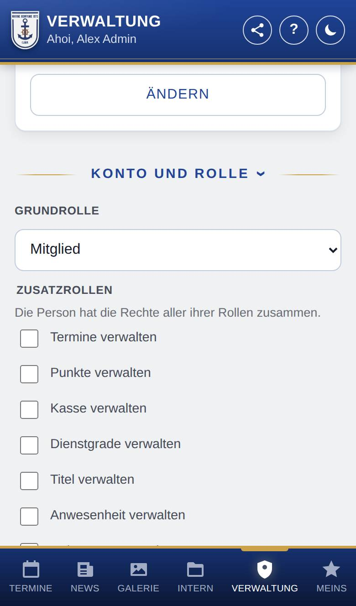
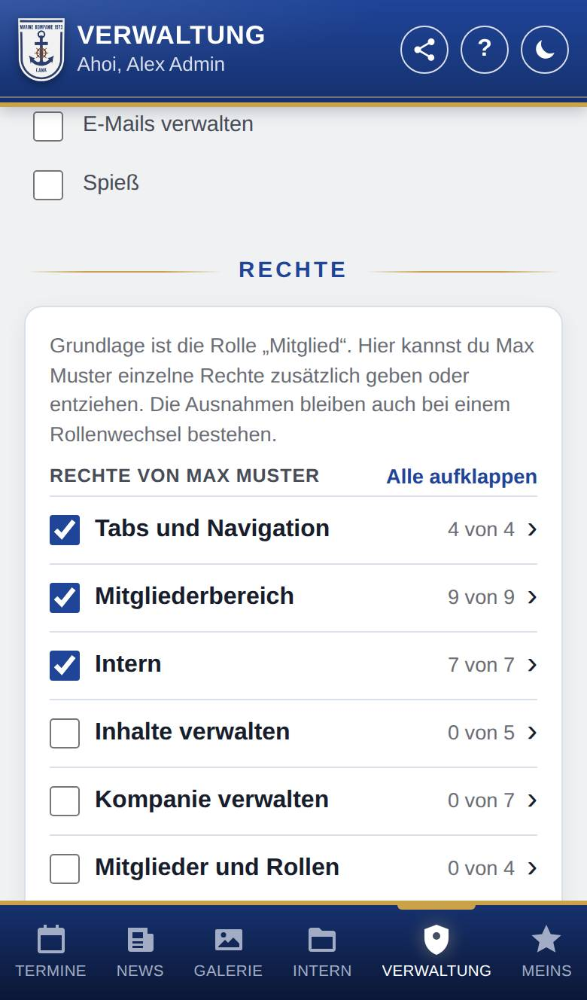
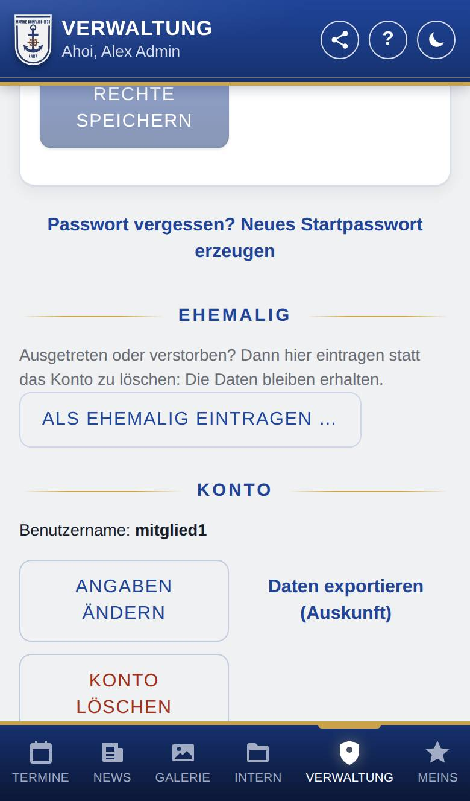

Konto und Rolle
Unter Konto und Rolle auf der Seite eines Mitglieds legst du fest, welche Rolle und welche Rechte die Person hat, erzeugst ein neues Startpasswort, trägst sie als ehemalig ein oder änderst und löschst ihr Konto. Wer nur Punkte, Strafen oder Ähnliches pflegt, sieht hier nur die Rolle.

So öffnest du die Seite
Tippe unten auf Verwaltung, dann auf Mitglieder, und tippe auf die Person. Tippe ganz unten auf ihrer Seite auf Konto und Rolle; der Bereich klappt auf.
Was du hier siehst
Du siehst nur die Teile, für die du das Recht hast:
- Grundrolle und Zusatzrollen: für alle, die Rollen vergeben dürfen. Sonst steht hier nur die Rolle zum Lesen.
- Rechte: alle Rechte der Person, mit Rechte speichern (wer Rollen vergeben darf).
- Als Mitglied aufnehmen: nur bei Rollen, die ein Admin dafür freigegeben hat, z. B. Anwärter (wer Mitglieder anlegen darf).
- Passwort vergessen? Neues Startpasswort erzeugen (wer Mitglieder anlegen darf).
- Ehemalig mit Als ehemalig eintragen … (wer Mitglieder anlegen darf).
- Konto mit Benutzername, E-Mail und Handynummer, Angaben ändern, Daten exportieren (Auskunft) und Konto löschen (wer Mitglieder anlegen darf). Auf deiner eigenen Seite fehlt Konto löschen.
So gehst du vor
Die Rolle ändern
- Wähle unter Grundrolle die neue Rolle. Die Änderung gilt sofort.
- Machst du jemanden zum Admin, fragt die App vorher nach: Admins dürfen alles, auch Einstellungen ändern.
Eine Zusatzrolle vergeben
- Setze unter Zusatzrollen einen Haken bei der Rolle, z. B. „Punkte verwalten“. Die Änderung gilt sofort.
- Entferne den Haken, um die Zusatzrolle wieder wegzunehmen.
Ein einzelnes Recht geben oder entziehen
- Klappe unter Rechte die Gruppe auf, indem du auf ihren Namen tippst, und setze oder entferne den Haken beim Recht. Der Haken vor der Gruppe setzt oder entfernt alle Rechte der Gruppe auf einmal. Gruppen mit Ausnahmen sind schon aufgeklappt.
- Tippe auf Rechte speichern. Was von den Rollen abweicht, ist mit „zusätzlich“ oder „entzogen“ markiert.
- Wie die Rolle entfernt alle Ausnahmen wieder.

Ein neues Startpasswort erzeugen
- Tippe auf Passwort vergessen? Neues Startpasswort erzeugen und bestätige die Rückfrage.
- Gib das neue Startpasswort persönlich weiter. Es steht nur jetzt da; darunter steht der Link zur Installationsanleitung.
Angaben ändern oder das Konto löschen
- Tippe unter Konto auf Angaben ändern, ändere Vorname, Nachname, Benutzername, E-Mail oder Handynummer und tippe auf Speichern. E-Mail-Adresse und Handynummer kann die Person auch selbst unter Meins → Konto ändern. Änderst du deine eigene E-Mail-Adresse, gib zur Bestätigung dein Aktuelles Passwort ein.
- Zum Löschen tippe auf Konto löschen, tippe zur Bestätigung den Namen ein und dann Endgültig löschen.

Gut zu wissen
- Die Person hat die Rechte aller ihrer Rollen zusammen; bei Punkte zählt der kleinste Punktefaktor ihrer Rollen. Zusatzrollen gibt es nur zu einer Grundrolle, die zur Kompanie gehört; Gast, Mitglied und Admin sind nur Grundrolle.
- Die eigene Rolle und die eigenen Rechte ändert niemand selbst. Der letzte Admin kann nicht herabgestuft werden.
- Wer kein Admin ist, vergibt und entfernt nur Rollen und Rechte, die er selbst hat – nie Admin und nie „Mitglieder anlegen“ oder „Rollen vergeben“ – und ändert nur Personen, die keines dieser beiden Rechte und keine weiteren Rechte als er selbst haben.
- Ausnahmen bei den Rechten bleiben, wenn sich die Rollen ändern; was die Rollen dann ohnehin regeln, fällt weg. Admins haben immer alle Rechte, Gasts die ihrer Rolle: Für sie gibt es keine Ausnahmen. Einstellungen, Updates und Datensicherung bleiben Admins vorbehalten.
- Nach einem neuen Startpasswort gilt das alte nicht mehr, und die Person ist auf allen Geräten abgemeldet. Ein neuer Benutzername meldet sie ebenfalls überall ab.
- Daten exportieren (Auskunft) (nur für alle, die jeden darin enthaltenen Bereich auch in der App sehen dürfen: persönliche Angaben, Punkte, Strafen, Dienstgrade, Titel, Anwesenheit, Umfragen, E-Mails, Listen, Schwarzes Brett und Ämter; in der Regel Admins) lädt alle gespeicherten Daten der Person als Datei herunter, z. B. wenn jemand nach der DSGVO (Art. 15) Auskunft verlangt. Antworten in anonymen Umfragen sind nicht dabei (sie bleiben anonym); die bekommt die Person nur selbst unter Konto → Meine Daten.
- Konto löschen entfernt alle eigenen Daten der Person: Punkte, Strafen, Anwesenheit, Dienstgrad, Titel, Geburtstag, Eintritt, Foto, Antworten bei Umfragen und Benachrichtigungen. Was sie für andere eingetragen hat, bleibt; dort steht dann „gelöschtes Konto“. Das eigene Konto und Konten von Admins lassen sich hier nicht löschen. Wer nur ausgetreten oder verstorben ist, trägst du besser als ehemalig ein: Dann bleiben alle Daten erhalten.
- Wer kein Admin ist, setzt Passwörter nur bei Personen zurück (und ändert bzw. löscht nur deren Konten und Fotos), die keine weiteren Rechte als er selbst haben und weder Mitglieder anlegen noch Rollen vergeben dürfen.
- Bei einer ehemaligen Person lassen sich Rolle, Rechte und Passwort erst nach Wieder aufnehmen ändern.
Für Fortgeschrittene: In der WordPress-Version wird die Rolle Admin im WordPress-Backend vergeben und entzogen, nicht in der App. Der Knopf zum Löschen heißt dort Aus der App entfernen: Der Benutzer der Webseite bleibt bestehen, hat aber keine Rolle in der App mehr. Name und E-Mail-Adresse löscht ein Administrator der Webseite im WordPress-Backend unter Benutzer (Beiträge dabei einer anderen Person zuordnen). Den Benutzernamen von Benutzern der Webseite (z. B. Redakteure) ändert nur, wer sie in WordPress bearbeiten darf.